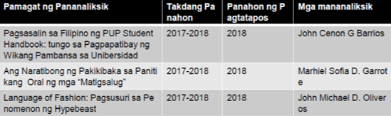

- Maisapraktika at mapaunlad pa ang mga batayang kasanayan sa pananaliksik.
Halina’t ilamin ang kinalaman ng mga salita sa pananaliksik sa iba’t ibang larang.
Sa pagtalakay sa Filipino bilang wika ng saliksik, hindi maisasantabi ang pagtalakay sa intelektwalisasyon ng Filipino. Iniaangat ng bayan ang antas ng wika sa estadong nagagamit ito sa intelektwal na usapin at intelektwal na materyales o babasahin.
Kinikilala ang pananaliksik bilang repleksyon ng talino at husay ng mananaliksik. Matagal nang nakasusulat ng pananaliksik sa Filipino ang mga Pilipino, lalo na ang mga nakapagdalubhasa sa Filipino.
Marami nang mga aklat sa Matematika at Agham ang tinangkang isulat sa Filipino. May mga aklat pang-medisina o pangkalusugan ang naisulat sa Filipino.
Marahil kung walang pananaliksik ay atrasado pa rin ang ating pamumuhay sa kasalukuyan. Ang mga kagamitang pantahanan ay higit na nagpapadali sa mga gawain ng bawat miyembro ng pamilya. Higit na nagkakaroon ng mabilis na komunikasyon ang bawat isa kahit na nasa malayong distansya bunga ng pagkakatuklas ng mga cellphone.
Ang pagpapatupad ng mga kapasyahan sa isang negosyo ay batay na rin sa resulta ng maingat na pagpaplano at pagsusuri kung aling pananaliksik ang higit na angkop sa lalong ikaangat ng negosyo.
Higit sa lahat, mahalaga ang pananaliksik sa larangan ng edukasyon. Mahalaga ang makapagtatag ng matibay na pundasyon ng karunungan sa isip ng mga mag-aaral sa pamamagitan ng pagtuklas ng mga pamamaraang lalong makapagpapaunawa sa mga mag-aaral ng kanilang lektura. Ang inobasyon sa pasilidad at kagamitang panturo ay nakasalalay din sa gagawing pagtuklas sa pananaliksik ng mga implikasyon nito sa larangang akademiko.
Dito higit na kailangan ang maingat na pag-aaral at pag-iimbestiga. Sa larangang ito ay walang hanggang ang pagtuklas ng mga kaparaanan sa nagpapatatag ng ekonomiya at kalagayang pampulitika sa bansa.
Sa pananaw ng mga ekonomista, ang pagkakaroon ng matatag na ekonomiya ay maaaring maging daan sa pagsasaayos ng kalagayang pampulitika ng bansa.
Makapagbasa at makapagbuod ng impormasyon, estadistika, datos atbp. mula sa mga babasahing nakasulat sa Filipino sa iba’t ibang larangan.
Ang mga sumusunod na halimbawa ng pananaliksik ng mga guro ay ilan lamang sa mga gawa ng mga guro. (Nasa Libro ng Filipino sa Iba’t Ibang Disiplina, pahina 50–63.)
Ang mga sumusunod na halimbawa ng pananaliksik ay ilan lamang sa mga gawa ng mga mag-aaral. (Nasa Libro ng Filipino sa Iba’t Ibang Disiplina, pahina 63–69.)
